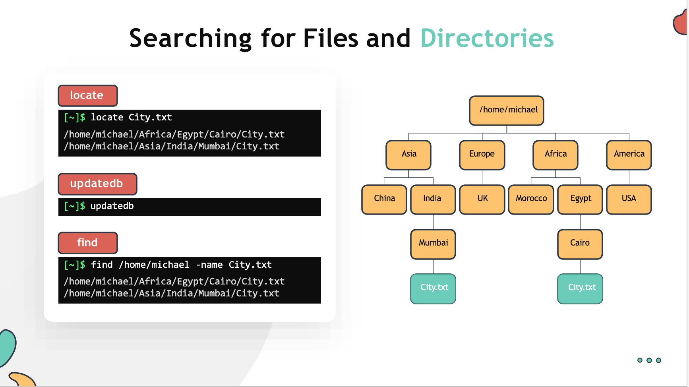
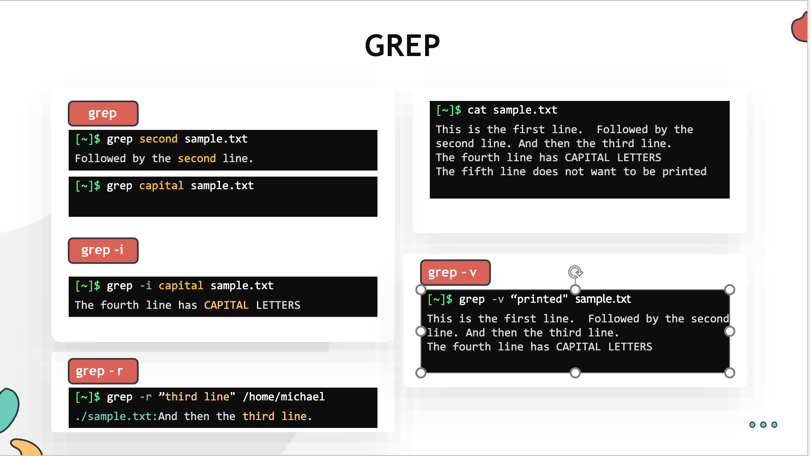
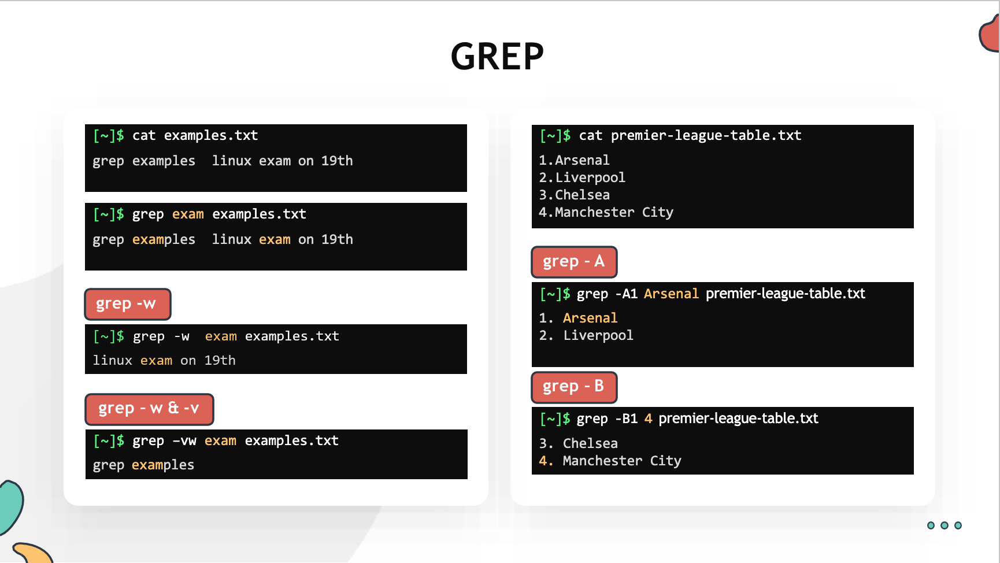
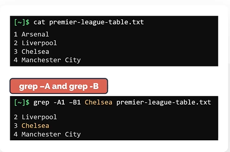

Searching for files and Patterns
In this section, we will take a look at how to locate a file or directory in the filesystem. - locate - find - grep
locate
Lets say you want to find the files with the name City.txt. Easiest way to do this is to make use of locate command.
- Run locate command followed by the filename you are searching as an argument. This should return all paths matching the pattern.
$ locate City.txt
- The downside of the locate command is it depends on a database called
mlocate.dbfor querying the filename. - If you have just installed linux or if the file you are trying to locate was created recently. The locate command may not give you useful results. This is because it is possible that the DB is not been updated yet.
- To manually update the DB, run the command
updatedband then run the locate command again$ sudo updatedb - Please note that the
updatedbcommand needs to be run as root user to work.
find
Another way to do this is make use of the find command. Use the find command followed by the directory under which you want to search. To search file by a name use the -name option followed by the name of the file.
$ find /home/michael -name City.txt

Grep
To search within files, the most popular command in linux is grep. - Grep is commonly used to print lines of a file matching a pattern but it also offers a variety of other options as well. - The grep command is case-sensitive
To search for the word second from the sample.txt
$ grep second sample.txt
To search for the word capital with case-insensitive use -i flag.
$ grep -i capital sample.txt
To search for a pattern recursively.
$ grep -r "thrid Line" /home/michael
To print the lines that don't matches the pattern
$ grep -v "printed" sample.txt

What if you want to match a pattern that form a whole word?
To search for the whole word called exam. Use grep followed by -w flag
$ grep -w exam examples.txt
You can also combine multiple options together. For example, to reverse the search and print all lines of the same file that doesn't match the whole word exam. Use grep -vw
$ grep -vw exam examples.txt
To print the number of lines after and before matching a pattern. Use grep command with -A and -B flags respectively.
$ grep -A1 Arsenal premier-league-table.txt
$ grep -B1 4 premier-league-table.txt

Finally, the -A and -B can be combined into one single search.
$ grep -A1 -B1 Chelsea premier-league-table.txt
